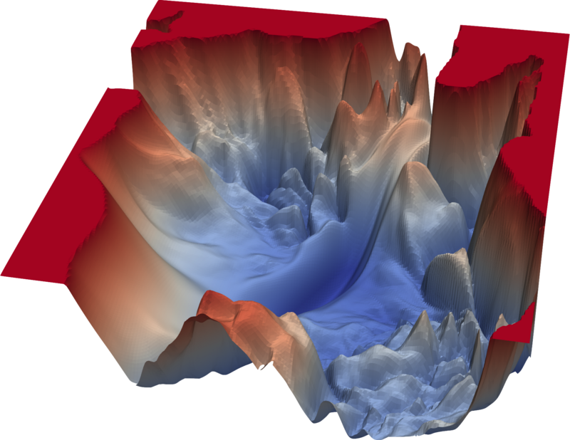
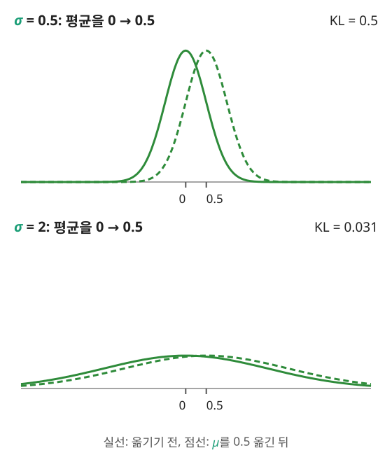

신경망을 학습시키는 것은 수백만, 수억 개의 매개변수로 이루어진 공간에서 손실 함수의 최솟값을 찾아 걸어가는 일이다. 가장 기본적인 전략인 경사하강법은 매개변수를 다음과 같이 갱신한다.
θ←θ−η∂θ∂LθLη매개변수 (매개변수공간의좌표)손실함수학습률
그래디언트(가장 가파르게 올라가는 방향의 벡터)의 반대 방향이 "가장 가파르게 내려가는 방향"이니 그 방향으로 걸으면 된다. 간단해 보인다.
하지만 모델을 짤 때마다 고르는 것이 하나 있다. 정규분포의 평균 μ와 표준편차 σ를 학습한다고 하자. σ를 그대로 매개변수로 둘 수도 있고, 로그를 씌운 logσ를 매개변수로 둘 수도 있다. 실제 코드는 뒤쪽을 자주 고른다. 변분 오토인코더(VAE, 데이터를 정규분포 꼴의 잠재 변수로 눌렀다가 되살리는 생성 모델)의 PyTorch 예제 코드에서 인코더는 분산 대신 로그 분산을 내놓는다. 둘은 같은 모델이고 같은 손실이다. 그런데 평균 2, 분산 1인 데이터에 맞추며 σ=0.5에서 같은 학습률로 한 걸음을 걸으면, σ 좌표로 계산한 걸음이 logσ 좌표로 계산한 걸음보다 σ를 네 배 더 움직인다. 이렇게 같은 모델의 매개변수에 새 이름표를 붙이는 것을 재매개변수화(reparameterize. VAE의 재매개변수화 트릭과는 이름만 같다)라 하고, 새 이름표를 φ=f(θ)처럼 적는다. 같은 모델, 같은 손실 함수인데 매개변수의 이름표를 바꾸기만 했을 뿐인데도 걸음이 달라지고, 걸음이 쌓이면 학습 경로가 달라진다.
이것은 심각한 문제다. 물리 법칙이 좌표계에 의존하면 안 되듯이, 학습 알고리즘이 매개변수의 이름에 의존해서는 안 된다. 좌표에 의존하지 않는 "진짜 가장 가파른 내리막 방향(최급강하 방향)"이 존재하는가? 존재한다면 어떻게 계산하는가?

신경망의 손실 풍경(loss landscape) 3차원 시각화 — 매개변수 공간에서 손실 함수가 만드는 복잡한 지형 (Li et al., 2018)
이 질문의 답은 이 책 전체를 관통하는 주제, 곧 매개변수 공간을 매니폴드(좁게 보면 평평해 보이는 휘어진 공간)로 보는 관점에서 자연스럽게 나온다.
피셔 정보행렬: 분포 공간의 자
출발 문제는 좌표에 의존하지 않는 "진짜 최급강하 방향"이 있느냐고 물었다. 그 답을 찾기 전에, "가장 가파르다"는 말이 애초에 무엇에 기대고 있는지부터 따져 보자.
보통의 경사하강법에서 "가장 가파른 방향"은 유클리드 내적으로 정의된다. 한 걸음 δθ(θ의 작은 변화)의 크기를 정해 두고, 곧 작은 수 ϵ에 대해 ∥δθ∥2=∑i(δθi)2≤ϵ2 제약 아래 L(θ+δθ)를 가장 많이 줄이는 δθ의 방향이 그래디언트의 반대 방향이다. 하지만 이 유클리드 내적은 매개변수 공간이 평평하고, 모든 방향의 눈금이 같다고 가정한 것이다.
매개변수 공간이 계량(점마다 거리와 각도를 재는 자)이 주어진 매니폴드, 곧 리만 매니폴드라면 "가장 가파른 방향"은 계량에 의존한다. 걸음의 크기를 계량으로 재어 gijδθiδθj≤ϵ2 제약 아래 최적화하면(제약을 지키며 최솟값을 찾는 표준 방법인 라그랑주 승수법 한 줄이면 된다) 최급강하 방향은 다음과 같다.
그래디언트에 계량의 역행렬을 곱해야 하는 것이다. 편미분 ∂L/∂θj는 화살표 하나를 넣으면 손실이 얼마나 변하는지를 돌려주는 눈금자다(그래서 첨자가 아래에 붙는다). 실제로 걸어갈 것은 화살표다(첨자가 위에 붙는다). 눈금자를 화살표로 바꿔 주는 것이 자, 곧 계량의 역행렬이다.
그러면 매개변수 공간에서는 어떤 자를 써야 할까?
역사: 평균이냐 중앙값이냐
이 물음에 쓰일 양은 학습이 아니라 추정에서 먼저 나왔다. 통계학자 로널드 피셔(Ronald A. Fisher)가 붙든 물음은 같은 데이터로 모집단의 값을 어림할 때 어떤 계산법이 더 나은가였다. 평균을 어림하는 데 표본 평균을 쓸 수도 있고 중앙값을 쓸 수도 있다. 오차가 정규분포를 따르면 두 어림을 분산으로 견주면 되지만, 오차 분포가 정규분포가 아니고 계산법마다 모양이 제각각이면 분산 하나로는 견줄 수 없다. 피셔는 1925년 논문 「통계적 추정의 이론(Theory of Statistical Estimation)」에서 표본 11개로 평균과 중앙값을 견준 예를 들며, 어떤 계산법을 쓰든 상관없이 데이터가 지닌 「정보의 양」을 세우고, 계산법이 그 정보를 얼마나 남김없이 쓰는지로 효율을 쟀다. 그는 이 양을 추정 방법과 무관한, 모집단 자체의 성질로 보았다. 그 덕분에 뒤에 라오(C. R. Rao)가 1945년에 이 양을 분포 사이의 거리를 재는 자로 쓸 수 있었다.
같은 걸음, 다른 변화
피셔의 「정보의 양」이 무엇을 재는지 숫자로 보자. 정규분포의 평균 μ를 0에서 0.5로 옮긴다. 표준편차가 σ=0.5로 좁은 분포라면 옮기기 전과 뒤의 두 곡선은 한눈에 갈린다. σ=2로 넓은 분포라면 두 곡선이 거의 겹친다. 두 분포가 얼마나 다른지를 KL 발산(두 분포가 얼마나 다른지 한 방향으로 재는 양)으로 재면 표준편차가 같은 두 정규분포에서는 (Δμ)2/(2σ2)이라, 앞은 0.5, 뒤는 약 0.031로 열여섯 배 차이다. 매개변수로는 똑같이 0.5만큼 걸었는데, 분포로는 열여섯 배 다른 걸음이다. 매개변수 공간의 자는 「좌표가 얼마나 움직였나」가 아니라 「분포가 얼마나 바뀌었나」를 재야 한다.

같은 평균 이동 0.5가 표준편차 0.5인 좁은 분포(위)에서는 두 곡선을 뚜렷이 가르고, 표준편차 2인 넓은 분포(아래)에서는 두 곡선이 거의 겹친다. 두 분포 사이의 KL 발산은 0.5 대 약 0.031이다
스코어의 평균이 0이므로 이것은 스코어의 공분산이며, "매개변수의 작은 변화가 확률분포를 얼마나 바꾸는가"를 잰다. 위의 정규분포에서 평균 방향의 성분은 Fμμ=1/σ2이라 σ=0.5에서 4, σ=2에서 1/4로, 앞에서 본 열여섯 배가 그대로 나온다. 두 분포 사이의 KL 발산을 q=p 근방에서 2차까지 전개했을 때 나오는 계수가 바로 이 행렬이다. 피셔 행렬은 재매개변수화에 대해 계량 텐서(텐서는 좌표를 바꿀 때 성분이 정해진 규칙대로만 바뀌는 양으로, PyTorch의 tensor와는 이름만 같다)와 똑같은 규칙으로 변환되므로, 이 계량으로 보정한 그래디언트는 좌표에 의존하지 않는다.
피셔 정보행렬 (분포를 재는 자 / Fisher Information Matrix, Fij=E[∂θi∂logp∂θj∂logp]) — 로그가능도의 그래디언트(스코어)의 공분산 행렬. 매개변수 θ의 작은 변화가 확률분포를 얼마나 바꾸는지를 잰다. 피셔 행렬은 KL 발산(두 분포가 얼마나 다른지 한 방향으로 재는 양)의 헤세 행렬(두 번 미분한 값의 행렬)과 같으며 — Fij=∂θi∂θj∂2DKL(pθ∥pθ0)θ=θ0 — 이 사실이 피셔 행렬을 통계적 매니폴드의 리만 계량으로 만드는 근거다.
ML에서: 잊지 않게 붙잡아 둘 매개변수 고르기
한 과제를 배운 신경망에 새 과제를 가르치면 앞의 과제를 급격히 잊어버리는 일이 흔하다(파국적 망각, catastrophic forgetting). 커크패트릭(J. Kirkpatrick) 등이 2017년 PNAS에 발표한 EWC(Elastic Weight Consolidation)는 앞 과제에서 구한 피셔 정보행렬의 대각 성분으로 각 매개변수의 "중요도"를 재고, 새 과제를 배우는 동안 중요도가 큰 매개변수일수록 원래 값에서 멀어지지 못하게 벌점을 준다. 여기서 움직이는 것은 신경망의 매개변수이고, 피셔 정보가 크다는 것은 그 매개변수를 조금만 움직여도 앞 과제의 출력 분포가 크게 바뀐다는 뜻이다.
문제 1 — 강수확률 2%p는 언제 큰 변화일까
확인 두 예보관이 강수확률을 바꿨다. A는 50%에서 52%로, B는 1%에서 3%로 올렸다. 100일 동안 실제로 비 온 날을 세어 예보가 바뀐 것을 가려낸다고 하자. 두 경우 각각 비 온 날 수의 기댓값은 며칠 달라지고, 우연히 생기는 흔들림(표준편차)은 며칠인가? 어느 쪽 변화가 더 잘 드러나는가?
같이 풀기 세션 1
김민준
둘 다 2%p 올렸으니 비슷하겠죠. 굳이 고르면 A 쪽이 더 잘 보일 것 같아요. 반반일 때가 제일 불확실하니까 거기서 조금만 바뀌어도 티가 날 것 같거든요.
이서연
나는 비율로 봤어. 1%에서 3%는 세 배고 50%에서 52%는 1.04배니까, B 쪽 변화가 2.9배쯤 커.
선생님
두 사람 생각이 반대로 갈렸네요. 문제대로 100일을 세어 볼까요? 비 온 날은 며칠씩 달라지죠?
김민준
A는 50일에서 52일, B는 1일에서 3일이요. 둘 다 이틀이네요.
선생님
그 이틀이 우연히 생기는 흔들림보다 큰가요?
이서연
이항분포의 표준편차는 100p(1−p)니까 A는 25=5일, B는 0.99≈1일이에요. A의 이틀은 흔들림의 0.4배라 묻혀 버리고, B의 이틀은 흔들림의 2배라 바로 보여요. 0.4와 2면 다섯 배 차이네요. 비율로 친 2.9배와도 달라요.
김민준
아, 반반일 때는 원래 들쭉날쭉이 커서 이틀쯤은 티가 안 나는구나. 조교님이 "평균이 1점 올라도 원래 점수가 들쭉날쭉하면 의미 없다"고 했던 거랑 같네요.
선생님
같은 2%p라도 어디서 움직였느냐에 따라 분포가 달라지는 정도가 달라요. 흔들림으로 나눈 값을 제곱하면 0.16 대 4.04, 25배인데, 이 제곱이 100일치 피셔 정보에 걸음의 제곱을 곱한 값이에요.
문제 2 — 정보가 많은 방향에서는 크게 걸을까, 작게 걸을까
확인 매개변수가 하나인 모델에서 피셔 정보를 자로 쓴 가장 가파른 한 걸음은 δθ=−ηF−1dθdL이다(위의 최급강하 방향에서 계량 자리에 F를 넣은 것). 같은 기울기 dθdL에서 피셔 정보 F가 큰 곳과 작은 곳 중 어디서 걸음이 더 큰가? 그 이유를 "분포가 얼마나 바뀌는가"로 설명하라.
같이 풀기 세션 2
김민준
F가 크면 걸음도 커야 하지 않아요? 정보가 많다는 건 방향에 대한 확신이 크다는 거니까, 믿고 성큼성큼 가도 될 것 같은데요.
선생님
식을 다시 볼까요? F는 분모에 있어요, 분자에 있어요?
김민준
역행렬이니까 분모요. 그러면 F가 클수록 걸음이 작아지네요. 근데 직관은 왜 반대로 가죠?
이서연
피셔 정보가 크다는 건 θ를 조금만 바꿔도 분포가 크게 바뀐다는 뜻이잖아. 같은 δθ라도 분포 공간에서는 먼 거리야. 아까 1%에서 3%로 바꾼 예보처럼.
선생님
맞아요. 자연 경사는 매개변수 공간이 아니라 분포 공간에서 일정한 거리만큼 걷자는 규칙이에요. 눈금이 촘촘한 곳에서는 좌표로 조금만 움직여도 이미 많이 간 거예요.
김민준
아, 과제에서 하이퍼파라미터 튜닝할 때 조교가 "민감한 건 조금씩, 둔한 건 크게 바꿔 보세요"라고 했던 게 이거네요. 조금만 건드려도 결과가 확 바뀌는 게 피셔 정보가 큰 방향이고요.
문제 3 — 붙잡아 둘 가중치는 큰 가중치일까
계산 앞 과제를 배운 신경망의 두 가중치가 θ1=3.0, θ2=0.2이고, 앞 과제에서 잰 피셔 정보행렬의 대각 성분은 F11=0.02, F22=5.0이다(설명하기 쉽게 고른 값). 새 과제가 두 가중치를 각각 0.5씩 옮기려 한다. 앞 과제의 출력 분포가 바뀌는 정도(KL 발산)는 대각 성분만 쓰면 가중치마다 21Fii(δθi)2로 어림된다. 각 가중치를 옮길 때의 값을 구하고, 가중치의 크기로 고를 때와 피셔 정보로 고를 때 어느 가중치를 붙잡게 되는지 견주어라.
같이 풀기 세션 3
김민준
가지치기 과제에서는 크기가 작은 가중치부터 잘랐거든요. 작으면 출력에 주는 영향도 작으니까요. 그러니까 붙잡아 둘 건 3.0짜리 θ1이죠.
선생님
계산부터 해 볼까요? 각각 0.5씩 옮기면 앞 과제의 출력 분포는 얼마나 바뀌죠?
이서연
21×0.02×0.25=0.0025, 21×5.0×0.25=0.625. θ2를 옮길 때가 250배 커.
김민준
0.2짜리가요? 값이 그렇게 작은데요?
선생님
피셔 정보를 구하는 식에 가중치의 값이 들어 있었나요?
이서연
아니요. 그 가중치를 조금 바꿨을 때 로그가능도가 얼마나 흔들리는지(스코어)만 들어 있어요. 값이 작아도 출력이 그 가중치에 예민하면 피셔 정보가 커요.
김민준
아까 강수확률이랑 같네요. 50%에서 52%보다 1%에서 3%가 더 큰 변화였던 것처럼, 숫자의 크기가 아니라 분포가 얼마나 바뀌느냐로 재야 하는구나. 그래서 EWC는 θ2를 세게 붙잡는 거고요.
선생님
그래요. 「작은 가중치는 덜 중요하다」는 가지치기에서 쓰는 어림이고, 「앞 과제를 지키려면 무엇을 붙잡나」에는 피셔 정보가 직접 답해요.